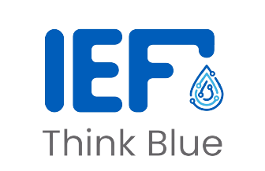

- Products
- Services
- Contact Us
Tnink Blue, Save Water.
IEF is a company with an ecological mission, it offers intelligent faucets equipped with sensors and flow's rate controllers, linked to a mobile application allowing the monitoring of water consumption and offering several models and resource management advice in order to save energy and use of water.